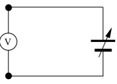
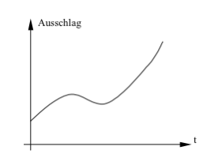

Grundlagen
Analog-Technik und Digital-Technik
In der Schwachstromelektronik werden heute die beiden Bereiche Analog-Technik und Digital-Technik unterschieden.
Ein einfaches Beispiel für diese beiden Begriffe stellt ein gewöhnlicher Spannungsmesser dar. Wenn man das Messgerät wie in Abb. 1 an eine regelbare Spannungsquelle anschließt, so vergrößert sich der Zeigerausschlag mit zunehmender Spannung. Dabei wird einem bestimmten Spannungswert genau eine Zeigerstellung zugeordnet. Dieser gleichmäßige Anstieg oder Abfall des Zeigers wird analoges Verhalten genannt.

Dabei ist jeder Zwischenwert der Spannung innerhalb des Messbereiches des Spannungsgerätes möglich. Der Ausschlag des Messgerätes entspricht dabei der angelegten Spannung, oder anders ausgedrückt: die angelegte Spannung ist analog zum Zeigerausschlag.
Abb. 2 zeigt ein typisches Diagramm für analoges Verhalten. Hier ist der Zeigerausschlag des Messgerätes in Abhängigkeit der Zeit t dargestellt. Es ist deutlich zu sehen, dass jeder beliebige Zwischenwert des Ausschlags eingestellt werden kann.

Bei der Digital-Technik dagegen wird die Information, die bei der Analog-Technik durch den Kurvenverlauf gegeben ist (Zeigerausschlag), durch das Ablesen auf der Skala bestimmt. Man ordnet eben jedem Zeigerstand einen bestimmten Spannungswert zu. Das ist bei fast allen Messgeräten durch die Skala von vornherein schon gegeben. Indem man nun die Skalenstriche abzählt, setzt man das analoge Signal (Ausschlag des Zeigers) in ein digitales Signal (Anzahl der Striche) um.
Dabei hat die Digital-Technik gegenüber der Analog-Technik einen großen Vorteil. Während bei analogen Schaltungen der Spannungsbereich meist genau stimmen muss, braucht man in digitalen Schaltungen nur den richtigen Spannungsbereich einzuhalten. Dies bringt eine erhöhte Stabilität der digitalen Schaltungen mit sich.
Die beiden Spannungsbereiche, die in der Digital-Technik verwendet
werden, heißen L-Bereich (von engl.: low = niedrig) und H-Bereich
(von engl.: high = hoch). Hier werden für die Beispiele eine
Versorgungsspannung Uv = 5V und die beiden Spannungsbereiche mit
0V bis +0,5V für L (low) und +2,5V bis +5V für H (high) festgelegt,
da diese Spannungsbereiche außerdem gerade für TTL-Schaltungen
(TTL = Transistor-Transistor-Logik) oft benötigt werden.
In der mathematischen Beschreibung von digitalen Schaltungen wird der L-Bereich mit 0 und der H-Bereich mit 1 beschrieben. Dies ist unter anderem für Wahrheitstabellen und KV-Tafeln, die in anderen Kapiteln zur Anwendung kommen, sehr von Vorteil.
Das Dualsystem
In den digitalen Schaltungen mit seinen zwei Bereichen H und L wird das Dualsystem für die Beschreibung mathematischer Zusammenhänge angewendet. Dabei werden nur zwei Zahlen benötigt, nämlich 1 und 0. Eine Verdeutlichung des Dualsystems ist am einfachsten durch eine Gegenüberstellung mit unserem üblichen Dezimalsystem zu erreichen:
| Dezimalsystem | Dualsystem |
|---|---|
| 0 | 0 |
| 1 | 1 |
| 2 | 10 |
| 3 | 11 |
| 4 | 100 |
| 5 | 101 |
| 6 | 110 |
| 7 | 111 |
| 8 | 1000 |
| 9 | 1001 |
| 10 | 1010 |
| 11 | 1011 |
Dabei spricht man die duale Zahl 1001 nicht etwa Eintausendeins,
sondern man spricht die Zahlen einzeln von links beginnend,
also Eins, Null, Null, Eins.
Durch diese Darstellung können digitale Schaltungen (z.B. Zähler) sehr einfach und durchsichtig dargestellt werden.
Anmerkung zur Elektronik
Alle hier behandelten Schaltungen entsprechen der sog. Positiv-Logik. Das heißt, dass der H-Bereich eine positive Spannung sein muss.
(Es gibt auch eine Negativ-Logik, die aber in der Technik kaum eine Bedeutung hat.)
Weiterhin gilt ein offener Eingang (nicht angeschlossener Eingang) immer als Wert 1 (entspr. H). Dies ist durch die Bauweise der ICs (Integrierte Schaltungen) bedingt, die intern immer den Wert 1 an einen Ausgang legen, wenn dieser nicht angeschlossen ist. Das bringt vor allem beim Zusammenschalten mehrerer Verknüpfungsschaltungen enorme Vorteile.
Der Masseanschluss bei digitalen Schaltungen hat immer den Wert 0. Dies entspricht bei der Stromversorgung dem Minuspol. Der Wert 1 ist also der Pluspol der Spannungsquelle. Falls Messungen mit einem Spannungsmessgerät oder gar Oszilloskop gemacht werden, ist daher der Massepunkt immer der negative Pol der Spannungsquelle. Die kapazitive Last für digitale Schaltungen sollte 100 pF nicht überschreiten, damit die Funktion gewährleistet ist und eine Überlast der Ausgänge durch zu hohe Auf- bzw. Entladeströme vermieden wird. Sind größere Kondensatoren zur Signalverzögerung erforderlich, so ist ein Vorwiderstand vorzusehen.
Der Ausgangsstrom von TTL-Schaltungen ist sehr gering, meist bei 20 mA. Das reicht wohl für den Betrieb einer Kontroll-LED (Licht Emittierende Diode = Leuchtdiode), doch ist darauf zu achten, dass der Ausgang nicht überlastet wird. Notfalls muss ein Schaltverstärker dem Ausgang folgen, der das Ausgangssignal verstärkt. Bei manchen IC’s jedoch ist speziell für LED-Betrieb ein Treiber vorhanden, der einen Anschluss von mehr als einer LED erlaubt (z.B. beim 7-Segment-Decoder). Es ist ratsam, sich deshalb in einem Datenbuch über diesen Sachverhalt zu informieren.